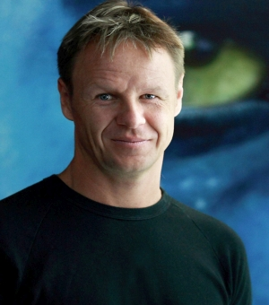
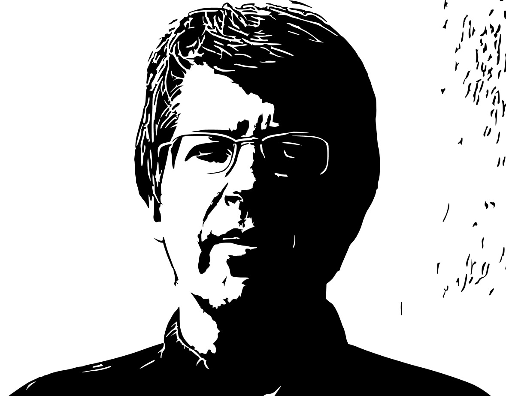

workshop in conjunction with PSIVT 2015 onVision meets Graphics |
| Home | Call for papers | Submission | People | Invited Speakers | Program |
|  |  |
|
Mark Sagar
Laboratory for Animate Technologies Auckland Bioengineering Institute University of Auckland |
David Mould
Graphics, Imaging and Games Lab School of Computer Science Carleton University |
|
Autonomous Facial Animation using models of embodied cognition |
Detail Preservation and Enhancement in Image Stylization |
| This talk describes the general approach and design of a framework which integrates computer graphics, computer vision and neural networks to create autonomous expressive embodied models of behaviour based on affective and cognitive neuroscience theories. The goal of our research is to integrate current theories and models to create a large functioning sketch of several fundamental aspects of human behaviour including face to face interaction, to explore how it may emerge from interaction of low level and high level systems in a top-down bottom up approach. A key aim is to create as naturalistic models as possible in order to elicit and respond to the appropriate behaviours from the user, involving both sensing and synthesis of visual and auditory stimuli. We illustrate how these features come together in a psychobiological simulation of an infant Baby X currently under development, which aims to combine models of early interactive behaviour and learning. |
Non-photorealistic rendering is the art and science of creating
synthetic images reminiscent of artistic styles and media.
Traditional techniques from both computer vision and computer
graphics are commonly employed: low- and mid-level image processing,
simulation, procedural modeling.
In this talk, I will give a tour of selected image stylization methods, including algorithms for stippling, scratchboard, and watercolor effects. Image stylization commonly removes detail from the input photograph; I will emphasize strategies for preserving and enhancing detail, increasing image richness. Suitable filter design can preserve salient image details such as irregular silhouettes while softening small-scale texture and noise; I will present the cumulative range geodesic filter, specifically intended for image simplification with medium-scale detail preservation. Alternatively, arbitrary detail can be merged with an input photograph, whether arising from additional input images or generated at runtime through image-guided particle systems. I will discuss examples of both. |
|
Academy Award winner Associate Professor Dr. Mark Sagar is the director of the Laboratory for Animate Technologies at the Auckland Bioengineering Institute, where his interest is in bringing digital characters to life using artificial nervous systems to empower the next generation of human computer interaction. His laboratory is pioneering neurobehavioral animation that combines biologically based models of faces and neural systems to create live, naturally intelligent, and highly expressive interactive systems. Mark previously worked as the Special Projects Supervisor at Weta Digital and Sony Pictures Imageworks and developed technology for the characters in blockbusters such as Avatar, King Kong, and Spiderman 2. His pioneering work in computer-generated faces was recognized with two consecutive Scientific and Engineering Oscars in 2010 and 2011. Dr. Sagar holds a Ph.D. in Bioengineering and is a recipient of the University of Auckland’s 2012 Distinguished Alumni Award. |
David Mould received his PhD in computer graphics from the University of Toronto in 2002. Prior to this, he earned a BSc in combined physics and computer science from the University of British Columbia. He was a faculty member at the University of Saskatchewan for six years, and is presently an associate professor at Carleton University, where he directs the Graphics, Imaging, and Games Lab in the School of Computer Science. Dr. Mould's research interests include game design, non-photorealistic rendering, and procedural natural phenomena. |